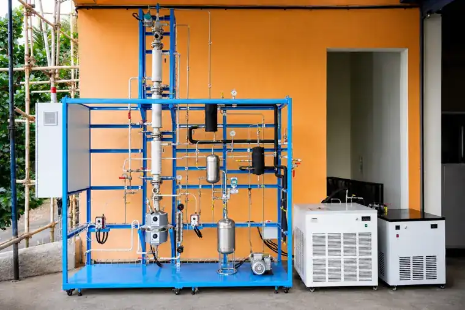

Methanol–water solvent recovery
A recovery system built in two parts: a process skid and a distillation tower with platforms and service access. A second project followed from the same customer.
Read the case studyProjects · Project Portfolio
Selected projects from pilot skids and research systems to plant-wide automation and PlantON deployments. Client names are withheld; references are available on request.

Project portfolio
Filter by solution. Projects that carry a full case study link to it.
A recovery system built in two parts: a process skid and a distillation tower with platforms and service access. A second project followed from the same customer.
Read the case studyReactor automation and engineering definition for an instrumented rare-earth research system.

Packaged analyzer skids measuring steam quality, pressure, temperature and density, with redundant ControlLogix control, Honeywell DCS links and remote tuning. Jointly patented.

Turnkey pilot skid for black-mass leaching, separation and crystallization, with Siemens S7-1500 control, 120 I/O and IoT batch reporting.
Read the case studyTwo-stage cryogenic capture with CO₂ de-sublimation, solid–liquid separation, liquefaction and solvent recovery. Siemens S7-1500, 225 I/O, safety interlocks.
Six programs with one research university, from battery recycling and carbon capture to a water-rig engineering package.

A pilot distillation unit with column, reboiler, condenser and chillers, built for flexible polymer research campaigns.

Gas-mixture purification under controlled temperature and pressure, instrumented for experimental operation and data collection.
Read the case studyAbsorption and regeneration stages with automated sequencing, so the research team can focus on performance, not manual coordination.
Read the case studyMembrane synthesis and gas-separation pilot with fixed-bed reactors, real-time mass balance and automated reports. Siemens S7-1500, 500 I/O, WinCC.
Read the case study
A multi-level stainless extraction skid with vessels, receivers, hazardous-area instrumentation and an integrated control panel.
A fully automated, unmanned skid in a classified hazardous area, 21 CFR Part 11 compliant, with advanced phase-separation control.
Read the case studyA specialized chemical pilot plant with supercritical process control and cascade loops, meeting a ≥99% purity specification.
Control of current, voltage, differential pressure and flow across the electrolysis stacks, with safety interlocks and data logging. Schneider PLC, AVEVA SCADA, 400+ I/O.
Water, steam and superheating, an SOEC/PCEC test section and H₂ / O₂ conditioning, with mass-flow control, interlocks and data acquisition.
Process-system engineering for high-temperature methane conversion: containment, gas handling, solid-carbon collection, utilities and interlocks.
Existing 0.5–20 L reactors retained and automated with pH control, dosing, temperature, agitation and PLC/SCADA, ready for future scale.
Sanitized examples: compact desalination, environmental-simulation chambers, water and condensate recovery, and specialized chemical pilots.
Automated compounding with 26 VFDs and 4 agitators, ISA-88 recipes, a paperless audit trail and IoT monitoring. Rockwell, 1,000+ I/O.
Read the case studyFormulation, raw-material addition, mixing, transfers, filling and CIP under one ISA-88-oriented batch control system, from engineering to commissioning.
Read the case studyA 21 CFR Part 11 compliant system with ISA-88 sequencing, PlantPAx modules and OPC UA links to the existing DCS. URS, FDS, FAT and SAT. 900+ I/O.
12+ control systems on one platform, with traceability from raw-milk reception to dispatch and automated utility and CIP reporting.
Read the case studyImported European conching, refining and tempering equipment on one redundant SCADA, with PlantON for OEE and utilities across sites. 3,000+ I/O.
Redundant Honeywell Experion control for temperature, pressure, hydrogen flow and catalyst beds. 1,200+ I/O.
Legacy machines and ERP data connected into one plant performance view, without replacing equipment.
Critical parameters identified with operations, extra sensors added and PlantON linking process conditions to chemical use and quality.
Operating visibility and improvement focus at a critical production cell.
A common performance model for machines never designed to report the same way, rolled up by machine, line and shift.
Automated continuous stirred-tank reactor units with PlantON visibility, in a long-standing pharma relationship.
Client names are withheld; references are available on request. Photographs show the actual delivered systems where available.
By stage
The same team engineers each step, so what is learned at pilot scale carries into the next system.
Electrolyzer test systems, reactor retrofits and specialized rigs for research teams.
Carbon capture, battery recycling, hydrogen, purification and propulsion-fuel pilots.
Solvent recovery, extraction, analyzer skids and API process skids in production.
Brownfield and greenfield automation, and PlantON visibility on running plants.
Let’s grow together
Toronto: +1 (647) 874-3958
Pune: +91 70280 15958
Toronto, Ontario, Canada
Pune, Maharashtra, India